Course: ROB-GY 6103: Advanced Mechatronics, NYU Tandon School of Engineering
Overview
Breez is a proof-of-concept non-invasive ventilator built on BiPAP (Bilevel Positive Airway Pressure) principles for post-COVID respiratory rehabilitation and sleep-apnea support. Air is delivered from an Ambu bag by a stepper-driven pump, while a suite of biomedical sensors reads the patient's vitals straight from the breath — a MAX30102 pulse oximeter captures heart rate and blood-oxygen (SpO₂), and a ScioSense ENS160 air-quality sensor tracks the CO₂, NO₂, and O₂ content of the exhaled air, all sharing one I²C bus alongside dual piezoresistive pressure sensors. Two Arduino UNOs split the work master/slave, and every reading streams over an RN-42 Bluetooth link to a companion Android app showing the live heart rate, SpO₂, and gas readings.
Demonstration Video
Technologies Used
- I²C (Inter-Integrated Circuit) — shared two-wire bus (SDA/SCL) carrying the MAX30102, ENS160, and pressure sensors to the master Arduino.
- SPI (Serial Peripheral Interface) — high-speed synchronous bus used for the display/peripheral link.
- UART / SoftwareSerial — serial link between the two Arduino UNOs and out to the Bluetooth module for telemetry.
- RN-42 Bluetooth module — wireless link streaming SpO₂, CO₂, and heart-rate data to the Android companion app.
- Master / Slave Arduino UNO architecture — one UNO handles sensor fusion, the other drives the stepper pump, coordinated over serial.
- MAX30102 — integrated pulse-oximeter and heart-rate sensor (red/IR photoplethysmography) on I²C.
- ScioSense ENS160 — metal-oxide air-quality sensor reporting eCO₂ / TVOC on I²C.
- Dual piezoresistive pressure sensors + HX711 — nasal/airway pressure measured through a 24-bit HX711 ADC.
- A4988 stepper driver + stepper motor — microstepped actuation of the Ambu-bag compression mechanism.
- Arduino / C++ firmware — closed-loop control tying sensor readings to pump speed.
- Android (Java) BLE app — real-time telemetry dashboard and status display.
System Design & Diagrams
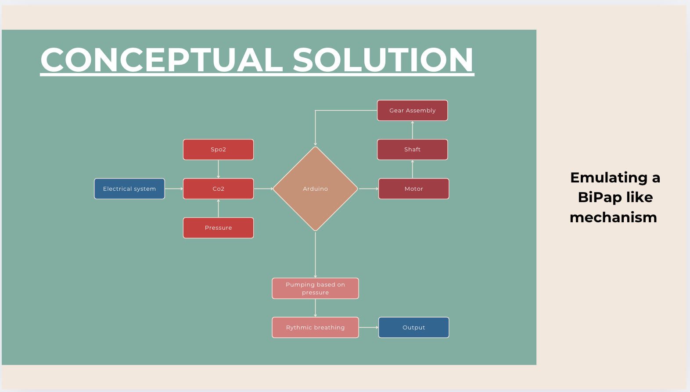
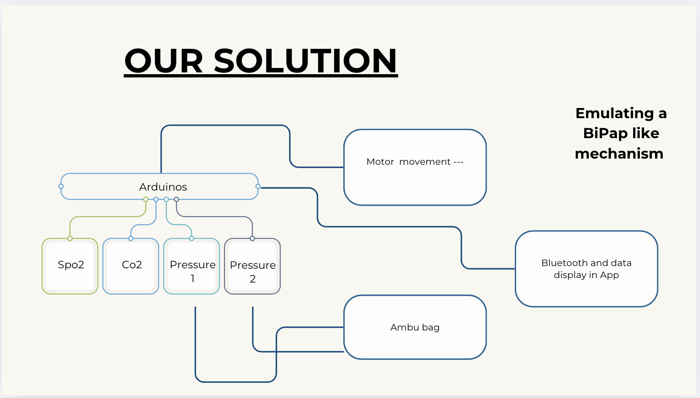
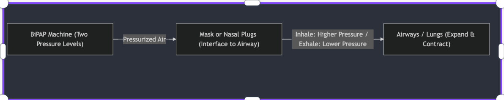
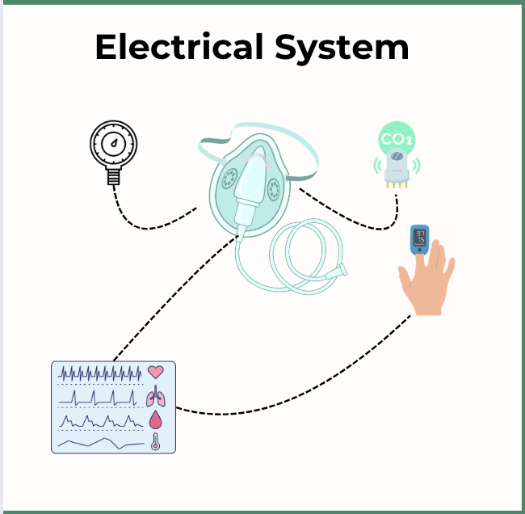
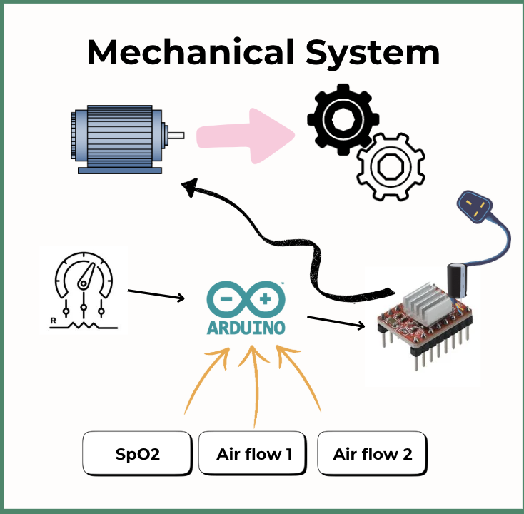
Sensors Used
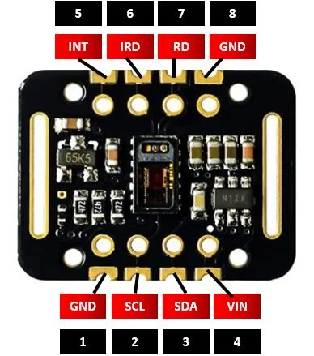
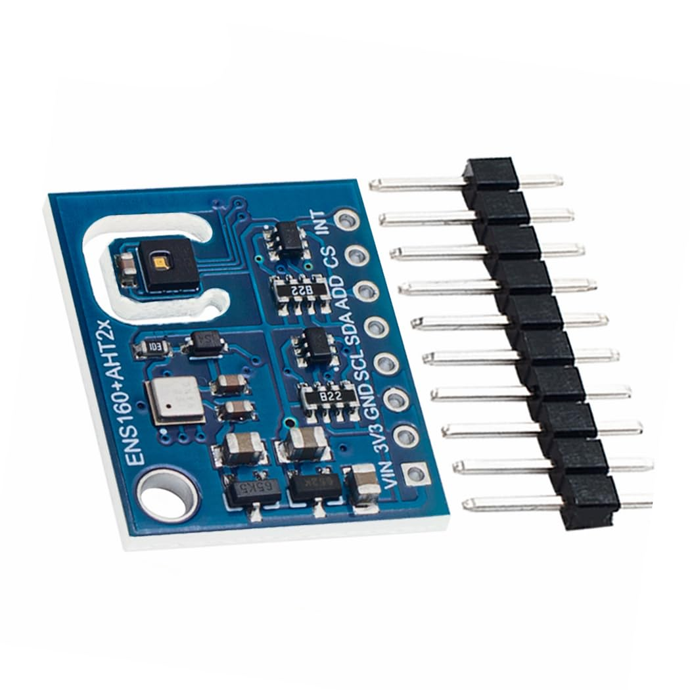
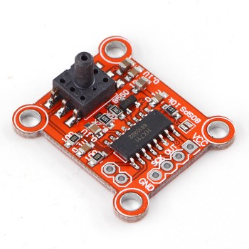
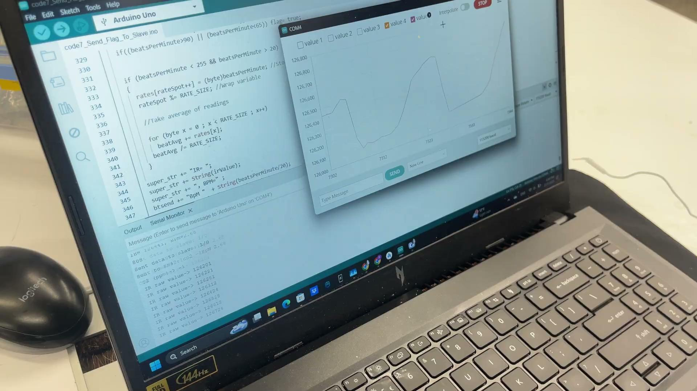
Companion Android App
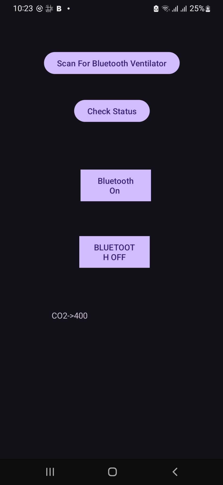
Mechanism & Telemetry
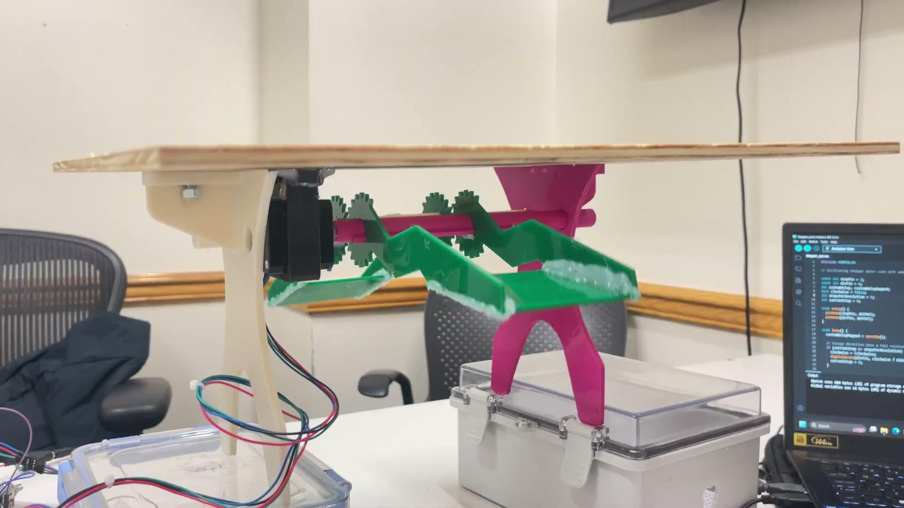
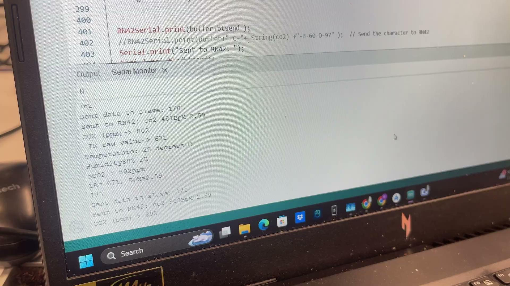
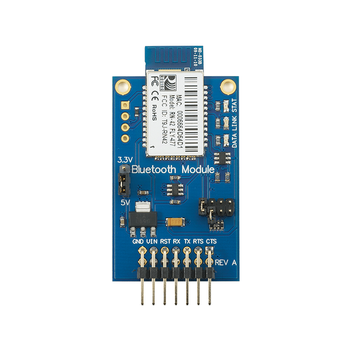
Outcome & Lesson Learned
What we learned: On testing the assembled mechanism, we realized the motors were not strong enough to compress the Ambu bag (balloon) hard enough to drive adequate airflow. The sensing, fusion, and BLE telemetry pipeline all worked end-to-end, but the actuation stage needs a higher-torque motor (or a mechanical-advantage redesign of the gear train) to deliver clinically useful pressure — the key takeaway for the next iteration.